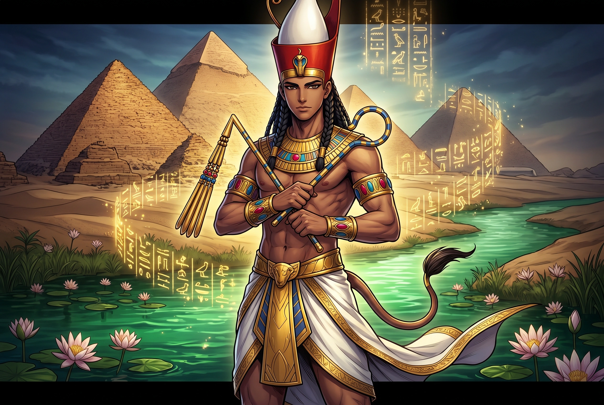

The Authentic Orthography
Personified Egypt, the Black Land · The Black Land Itself

Unicode restoration and ASCII comparison
Αἴγυπτος
The name in its original Greek form. Aígyptos (Αἴγυπτος) is attested in the source tradition — “From Egyptian Ḥwt-kꜣ-ptḥ ("House of the Ka of Ptah")”. Its acute accents carry the full phonetic and orthographic weight of the source tradition.
aigyptos
Reduced to plain aigyptos, the name loses everything that made it specific: acute accents. What remains is an ASCII string that machines can parse but that no longer speaks with its original voice.
Aígyptos
The Unicode restoration recovers what ASCII flattened. Aígyptos restores acute accents, returning the name to its original written dignity. The domain encodes to Punycode, but the browser displays the truth.
Aígyptos.com → xn--agyptos-7ya.com
The non-ASCII characters in Aígyptos are encoded while the ASCII remains visible. To the DNS, it is Punycode. To humanity, it is Aígyptos.
How Aígyptos travels from ancient script to the modern URL
Greek Αἴγυπτος; from Egyptian Ḥwt-kꜣ-ptḥ “House of the Ka of Ptah", Hellenised through Egyptian and Semitic intermediaries.
Personified Egypt, the Black Land
The Unicode restoration Aígyptos preserves Greek stress and length; the ASCII form aigyptos loses these features.
Owned, ideal, and ASCII forms of Aígyptos
Aígyptos
Restores Αἴγυπτος. The live temple domain — aígyptos.com.
aigyptos
Flattens Αἴγυπτος. The plain ASCII fallback — what DNS and legacy systems see.
How Aígyptos was spoken
The domain of Aígyptos
As a personified land, Aígyptos gathers what the Greeks saw when they looked south: the black silt of the Nile, the temple-name of Memphis fossilized in the country's name, the reputed wisdom of its priests, and the annual flood that re-enacted creation.
Aígyptos personifies the fertile Nile valley, the "black land" (kmt) renewed each year by the river's silt.
The name itself encodes Memphis theology: Ḥwt-kꜣ-ptḥ, the estate where the creator's vital force dwells.
Greek writers from Herodotus to Plutarch imagined Egypt as a repository of primeval knowledge older than Greece.
The annual flood was creation re-enacted: without it, the Black Land returned to desert, and order collapsed.
Stories of Aígyptos
In Greek geographic and mythic imagination, Aígyptos is far more than a river valley on a map; it is the personified land of the Black Soil, the mysteriēs-bearer of an ancient world that Greek poets believed predated their own gods. Herodotus called Egypt “the gift of the Nile,” but Greek tradition also made it a storehouse of primeval wisdom, where kings became gods, temples preserved secrets from before the Flood, and the river itself rose like a creator without need of rain. By the Hellenistic period, this wonder had produced thriving cults of Isis and Serapis from Alexandria to Athens, translating Pharaonic ritual into a Mediterranean religious language that Romans would carry as far as Britain and the Rhine frontier. The name Aígyptos thus carries the weight of Greek wonder before an African empire they both admired and feared. Greek writers from Aeschylus to Plutarch returned to Egypt as a stage for divine dramas: the Nile's flood became a metaphor for creation, Memphis a rival to Delphi, and the pyramids silent proof of a kingdom older than memory. The very alphabet that Greeks used to spell Aígyptos had once, some believed, been borrowed from Pharaonic priests.
In the Greek genealogical tradition preserved by Hesiod and later mythographers, Aígyptos is named after Aígyptos the son of Bēlos and the brother of Danaos. Their fifty sons and fifty daughters—the Aigyptioi and Danaïdes—were betrothed in a mass wedding that ended in blood. On their wedding night, the Danaïdes, led by Hypermnēstrā, slew all but one of the Aigyptioi, and their punishments became a fixture of the underworld. This myth turns Egypt into a land born from a fratricidal exodus, linking the Black Land forever to stories of exile, vengeance, and dynastic strife.
Herodotus opens Book 2 of his Histories with a deliberate shift in tone: Egypt, he insists, is the place where chronology runs backward, where the priests can recite three hundred forty-one generations of high priests, and where the Nile behaves unlike any other river known to Greeks. For him, Aígyptos is not merely territory but a challenge to Greek assumptions about nature and time. The land becomes a mirror in which Greece sees its own youth reflected against Egypt's antique gravity.
Later Greek and Roman writers—Diodorus, Plutarch, and the Neoplatonists—doubled down on this image, claiming that Greek lawgivers, philosophers, and mystery rites had traveled up the Nile to learn at Egyptian shrines. Whether historical or romantic, the idea made Aígyptos the symbolic birthplace of civilization itself, a role it still plays whenever antiquity is imagined as a ladder leading eastward to the Nile.
To sit with the name Aígyptos is to watch one word travel farther than most empires. A temple-name of Memphis — the house where the creator god's vital force dwelt — became in Greek mouths the name of a river, a land, and finally an entire idea of antiquity. The acute accent of the restored form is the trace of that journey: an Egyptian consonant-skeleton fitted with Greek vowels, Greek stress, and Greek wonder. The restoration asks only that the traveller be spelled as the Greeks who coined the name wrote it.
Enter Extended Lore